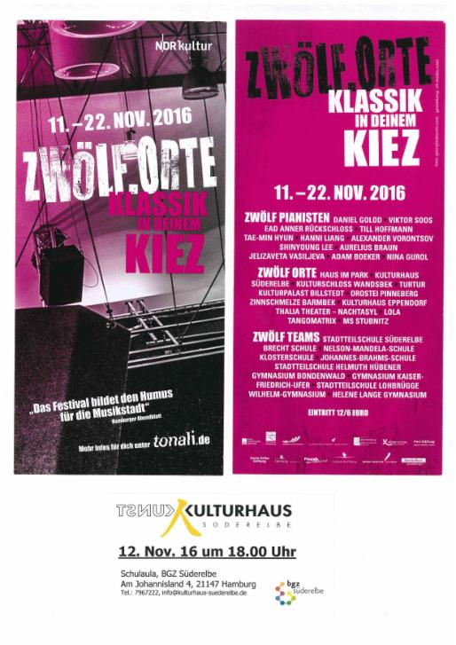

Tonali Konzert am 12.11.16 um 18 Uhr
TONALI ist weit mehr als ein innovativer Instrumentalwettbewerb für talentierte Jungsolisten. Es ist ein ganzheitliches Kulturprojekt, das insbesondere junge Menschen für klassische Musik begeistert. Dabei organisieren einhundert Hamburger Schüler an zwölf ausgewählten Orten Konzerte für junge und junggebliebene Hörer.
Die MusikerInnen sind alle unter 21 Jahre und sehr talentiert. In "zwölf.Orte / Klassik in deinem Kiez" entwickeln Schülermanager Konzertkonzepte gemeinsam mit ihren PatenmusikerInnen, kümmern sich um Marketingideen, Werbekampagnen und Durchführungskonzepte. Wie im letzten Jahr findet auch 2016 eines der Konzerte in der Aula des BGZ Süderelbe, Am Johannisland 4, während der Kulturtage Süderelbe statt. Es wird betreut von Schülern der Stadtteilschule Süderelbe.
Das Instrument dieses Jahres ist das Klavier, auf dem der Preisträger des TONALI-Wettbewerbs, Viktor Soos, am Samstag, den 12.11.16 um 18 Uhr sein Können zeigt.
Die Liste seiner künstlerischen Laufbahn ist lang, obwohl er erst 1996 geboren wurde. U.a. war er 2014/15 Jungstudent an der Musikhochschule Frankfurt am Main in der Klavierklsse von Prof. Oliver Kern, tourte mit Konzerten auch nach Chile, Finnland, Frankreich, Italien und Tschechien, gewann etliche Preise (z.B. ist er achtfacher Bundespreisträger von "Jugend Musiziert" und gewann den ersten Preis 2012 des Tonkünstlerwettbewerbs Baden-Würtemberg).